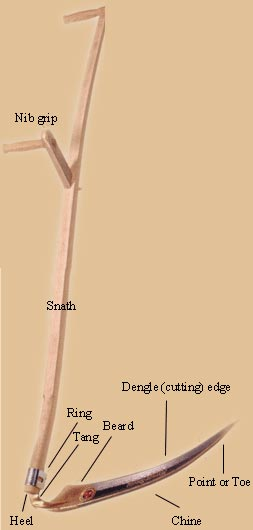

The scythe is simply the most efficient and graceful tool for mowing. It cuts heavy weeds and tall grass with ease, and with practice can be precise enough to cut and trim your lawn. It will silently outcut your string trimmer and venture where a push or gas lawn mower becomes useless. The scythe does all this with little physical effort, noise or pollution.
There are two styles of scythes, the European and the American. The European scythe blade is made light, thin and strong without excess material. Its strength comes from the curves and tension of the skinlike structure. This design has been refined through the centuries to be efficient and minimal. The blade is fitted to a lightweight wooden handle called a snath. The grips are comfortably positioned, permitting an upright, stress-free stance, and the blade is adjusted to skim parallel to the ground. For maximum performance and enjoyment the snath should be customized to fit the user's body proportions.
To mow, the blade is drawn from right to left in an arc. Only the leading third of the blade enters the uncut grass. This shearing action slices the grass like scissors. Falling grass caught by the blade and snath is deposited in a tidy pile at the end of each stroke. A stroke takes about as much effort as paddling a canoe. The mower can set a pace that is sustainable. The European blade has a curved back that allows it to ride in close contact with the ground. The blade remains in contact with the ground during both the cutting and return stroke: There is no reason to lift it.
Sharpening a European scythe is a combination of hammering (called peening) and honing with a whetstone. The cutting edge is occasionally drawn out thin by using a hammer and a small anvil. In the field the blade is frequently and quickly honed with a water-soaked stone to maintain the sharp edge.
The American scythe is the type commonly found in tool sheds, antique shops and, unfortunately, in hardware stores. This scythe is harder to use and less efficient than the European style. This American pattern is mostly responsible for the scythe's reputation as a backbreaking, difficult tool.
The European scythe is an elegant combination of simplicity and competence. The rewards of using the tool are worth the effort in learning.
-Elliot Fishbein, Owner, Scythe Supply
Scythe Supply
(207) 853-4750 www.scythesupply.com
Johnny's Selected Seed Catalog
(207) 437-4301
www.johnnyseeds.com
Lehman's Hardware and Appliances, Inc.
(888) 438-5346
www.lehmans.com
Peaceful Valley Farm Supply
(888) 784-1722
|
 Elliot Fishbein The European scythe blade is made light, thin and strong without excess material. |
|
|